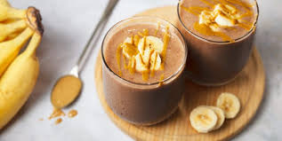

Protein Shake

Created by Muhammad Sarmad
Ingredients:
- Half cup of milk
- Raw Egg
- 1 Banana
- 2 Tbsp peanut butter
- 2 Dates
- 1 scoop creatine
- 1-2 scoops of your protein powder
- Ice cubes (preference)
Preperations:

- Grab a blender and set it up.
- Peel the banana and throw it in the grinder.
- Crack the egg and throw it in.
- Pour the milk and,Also ice if preferred.
- Throw in the peanut butter and dates.
- Put in the protein powder and creatine
- Blend it at high speed and then chop blend it as well for 5 minutes.
- Stop the blender and pour shake in a cup
- Drink it cold and Enjoy!
This is one of my favorite recipes to take before and or after the gym. It contains high calories needed to get your body right and the creatine to give you a great pump. Its super easy to make and tastes delicious esp for all them gym heads.
If you're looking for some awesome recipes you can check out Food Network , a website that offers free online recipes.
| Nutrition Facts |
| Amount Per Serving |
150 |
| Calories |
150 |
| Protein |
20g |
| Carbohydrates |
20g |
| Vitamins |
Vitamin A |
| Vitamin C |
| Iron |
2mg |